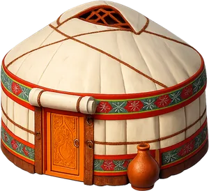
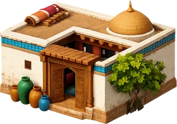
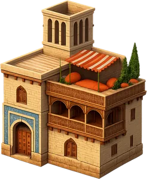
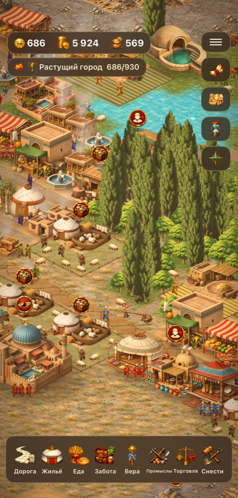
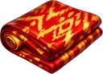
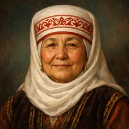

Проведите пятнадцать семей через степь.
Постройте для них империю на Шёлковом пути.
English · Русский · Türkçe · Deutsch · Français · Español
В духе великих градостроительных стратегий — среди юрт, караван-сараев и бирюзовых куполов Центральной Азии. У каждой дороги, каждого колодца и каждого святилища своё предназначение.
Пасите овец, сейте пшеницу, добывайте камень и железо. Валяйте из шерсти войлок, обжигайте из глины керамику, тките из коконов шёлк.
Каждому из пяти великих городов нужны свои товары. Торгуйте у своих ворот или снарядите собственный караван на восток — за лучшей ценой.
Когда у людей есть еда и вода, благословение и учение, они перебираются из войлочных юрт в особняки с ветроловами, а стан превращается в столицу.
Жильё улучшается, когда у жителей есть всё необходимое. Дайте им воду, затем еду, благословение шамана, заботу лекаря, сказания и музыку, школу, баню и тихую зелёную улицу — и смотрите, как преображается каждый дом.








По вашим улицам ходят водоносы, шаманы, акыны и сборщики налогов, и каждый дом на их пути получает то, что ему нужно. Играют дети, женщины носят воду от колодца, над каждым очагом поднимается дым.
Чем больше город, тем больше святилищ ждёт каждое божество. Перестройте святилище в большое святилище, а затем в храм — или устройте в честь божества праздник.

Владыка бескрайней синевы над степью.

Хранительница очага, матерей и детей.

Повелитель всего, что скрыто под землёй.

Караваны приходят из великих городов по очереди. В каждом городе есть товары, за которые его караваны платят в полтора раза больше. Приберегите шёлк для Самарканда, продайте войлок Бухаре зимой — и не заваливайте рынок одним товаром.

Советники следят за амбарами, богами, казной и разбойниками на горизонте и прямо говорят, что городу нужно дальше.
 Визирь БекзатГлавный советник
Визирь БекзатГлавный советник Посланник АлтынбекДела хана
Посланник АлтынбекДела хана
Старейшина АйгеримНарод Баксы КокборуБоги
Баксы КокборуБоги Сотник ТемирБезопасность
Сотник ТемирБезопасность ЮсуфКараван-баши
ЮсуфКараван-баши
Для своих войн он требует лошадей, войлок или золото. Исполняйте его волю — и подниметесь от старейшины рода до правой руки хана. Не исполните трижды подряд — и на вас двинется его войско.
Когда город разрастётся, откроются самые величественные здания. Но за них ещё придётся заплатить монетами, камнем и деревом.

Мударрисы несут учение в лучшие дома.

Все три бога почитаются под открытым небом.

Больше налогов, довольнее народ. Только один на город.

Чудо вашего города: его годами возводят в четыре яруса, камень за камнем.
Кампания от первого стана из юрт до Золотой Орды — через «Долгую зиму», «Разбойничий край» и «Чумной год». Или создайте собственное ханство в Бескрайней степи, где цели не кончаются никогда.


Обучение и первый сценарий кампании бесплатны — играйте в них сколько угодно. Одна покупка навсегда открывает весь Шёлковый путь. Город хранится на вашем устройстве, регистрация не нужна.